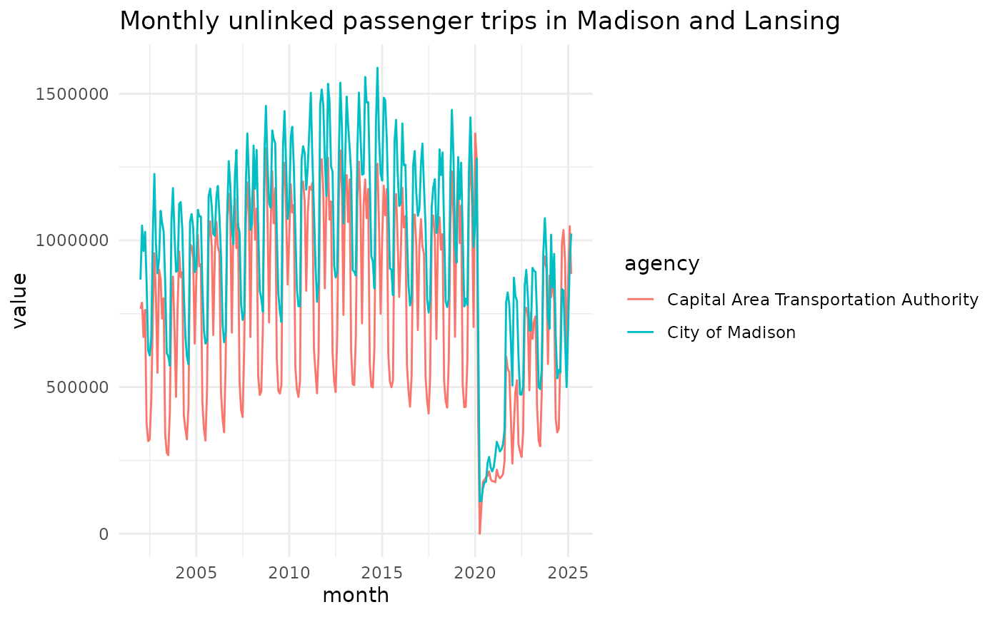

The ntdr package is an easy way to access National Transit
Database from R. The package is available on CRAN, or you can
install the latest development version from Github with
remotes::install_github("vgXhc/ntdr")
install.packages("ntdr")In addition to loading the ntdr package we also load the
tidyverse.
library(ntdr)
library(tidyverse)
#> ── Attaching core tidyverse packages ──────────────────────── tidyverse 2.0.0 ──
#> ✔ dplyr 1.1.4 ✔ readr 2.1.5
#> ✔ forcats 1.0.0 ✔ stringr 1.5.1
#> ✔ ggplot2 3.5.0 ✔ tibble 3.2.1
#> ✔ lubridate 1.9.3 ✔ tidyr 1.3.1
#> ✔ purrr 1.0.2
#> ── Conflicts ────────────────────────────────────────── tidyverse_conflicts() ──
#> ✖ dplyr::filter() masks stats::filter()
#> ✖ dplyr::lag() masks stats::lag()
#> ℹ Use the conflicted package (<http://conflicted.r-lib.org/>) to force all conflicts to become errors
get_ntd()
get_ntd() is the main function of the package. It
doesn’t have any required parameters:
ntd_data <- get_ntd()
#> New names:
#> • `2033379` -> `2033379...25`
#> • `2033379` -> `2033379...27`
ntd_data
#> # A tibble: 607,810 × 13
#> ntd_id_5 ntd_id_4 agency active reporter_type uace uza_name modes tos
#> <chr> <chr> <chr> <chr> <chr> <chr> <chr> <chr> <chr>
#> 1 00001 0001 King Count… Active Full Reporter 80389 Seattle… DR PT
#> 2 00001 0001 King Count… Active Full Reporter 80389 Seattle… DR PT
#> 3 00001 0001 King Count… Active Full Reporter 80389 Seattle… DR PT
#> 4 00001 0001 King Count… Active Full Reporter 80389 Seattle… DR PT
#> 5 00001 0001 King Count… Active Full Reporter 80389 Seattle… DR PT
#> 6 00001 0001 King Count… Active Full Reporter 80389 Seattle… DR PT
#> 7 00001 0001 King Count… Active Full Reporter 80389 Seattle… DR PT
#> 8 00001 0001 King Count… Active Full Reporter 80389 Seattle… DR PT
#> 9 00001 0001 King Count… Active Full Reporter 80389 Seattle… DR PT
#> 10 00001 0001 King Count… Active Full Reporter 80389 Seattle… DR PT
#> # ℹ 607,800 more rows
#> # ℹ 4 more variables: modes_simplified <chr>, month <date>, value <dbl>,
#> # ntd_variable <chr>
colnames(ntd_data)
#> [1] "ntd_id_5" "ntd_id_4" "agency" "active"
#> [5] "reporter_type" "uace" "uza_name" "modes"
#> [9] "tos" "modes_simplified" "month" "value"
#> [13] "ntd_variable"By default, the package downloads what the NTD calls “Complete
Monthly Ridership (with adjustments and estimates).” Alternatively you
can request raw data (“Raw Monthly Ridership (No
Adjustments or Estimates)”). The complete data includes the most recent
data available. The downside is that depending on the agency, the data
may be based on a growth estimate, and there is currently no way to
distinguish whether a value is based on an agency’s report or on the
growth estimate. Thus, very recent values and values for smaller
agencies should be interpreted with caution and may be revised later.
The raw data is the most reliable data, but the dataset
only is released once a year.
The package downloads a fairly large xlsx file from the
web and returns a tibble with 607810 rows and 13 columns. The first two
columns are identifiers for the transit agency; followed by a
human-readable agency name. Note that the agency name may not be what
you expect. For example, the name of our local agency in Madison
(Wisconsin) is “Metro
Transit”. But in the NTD data it is listed as “City of Madison”. So
if you cannot find your agency, use the uza_name variable
described below.
NTD data go back as far as 2002, and some agencies no longer actively
report data, report them under a different ID, or don’t even exist
anymore. This is reflected in the active column. Until
April 2024, the active data applied to the whole agency
itself. More recently, the data distinguishes between different types of
service (see below) within an agency, limiting the usefulness of the
variable. I.e. an agency may still actively report data on their
directly operated bus service, but they no longer run (and therefore
actively report) on light rail service.
The reporter_type variable most commonly takes on the
Full reporter value, but especially smaller or rural
systems may have a different value for this variable. For agencies that
aren’t full reporters, the NTD data may include projections rather than
actually reported data. Even for full reporters, most recent data may be
based on estimates and may be corrected in future data releases.
uza is an identifier for urbanized
areas and uza_name has the name of that area (this will
usually be how you will find your local agency).
Since July 2023, an additional identifier, uace is
included. In future versions of the dataset, this identifier will likely
replace the uza variable.
modes denotes the type of transit reported on.
ntd_data |>
count(modes)
#> # A tibble: 21 × 2
#> modes n
#> <chr> <int>
#> 1 AG 1330
#> 2 AR 266
#> 3 CB 37772
#> 4 CC 266
#> 5 CR 10108
#> 6 DR 252434
#> 7 FB 12768
#> 8 HR 4256
#> 9 IP 1064
#> 10 LR 9310
#> # ℹ 11 more rowsThere are a lot of different modes, including rather obscure ones
like “Inclined Plane” (IP) or “Alaska Railroad”
(AR). You can find documentation of the different modes here. Since July 2023,
a simplified variable for mode is included,
modes_simplified, which only distinguishes between bus,
rail, ferry, and other.
The tos variable represents the “type of service”:
ntd_data |>
count(tos, sort = TRUE)
#> # A tibble: 4 × 2
#> tos n
#> <chr> <int>
#> 1 DO 311220
#> 2 PT 258818
#> 3 TX 33516
#> 4 TN 4256The most common values are DO, which is directly
operated service, i.e. a transit agency running their own service; and
PT for “purchased transportation”, i.e. a transit agency
contracting out services. Often agencies will have an entry for both of
these, with DO being the regular, fixed route service and
PT being paratransit or other more specialized forms of
transit.
Finally, the month and value variables
provide the actual transit data for a given month. What variable is
represented by value is in the ntd_variable.
If you call get_ntd() without any additional parameters, it
will return the “unlinked passenger trips” (UPT) metric for all
agencies, modes, and types of service.
Plot the data
The data are returned in a long format, which makes it easy to create plots:
get_ntd(agency = c("City of Madison", "Capital Area Transportation Authority"), modes = "MB") |>
dplyr::filter(tos == "DO") |>
ggplot(aes(month, value, color = agency)) +
geom_line() +
labs(title = "Monthly unlinked passenger trips in Madison and Lansing") +
theme_minimal()
#> New names:
#> • `2033379` -> `2033379...25`
#> • `2033379` -> `2033379...27`